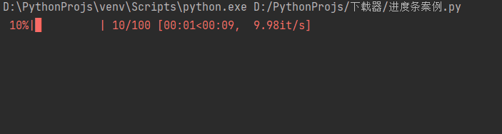
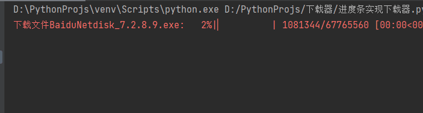

本文最后更新于：2021年9月3日 晚上
需要安装的库 tqdm
Tqdm 是一个快速，可扩展的Python进度条，可以在 Python 长循环中添加一个进度提示信息，用户只需要封装任意的迭代器 tqdm(iterator)。
retry是一个用于错误处理的模块，功能类似try-except。
安装：
pip install tqdm requests multitasking retry
找个文件下载下：
https://issuecdn.baidupcs.com/issue/netdisk/yunguanjia/BaiduNetdisk_7.2 .8 .9 .exe
简易版下载器 1 2 3 4 5 6 7 8 9 10 11 12 13 14 15 16 17 18 19 20 import requests"https://issuecdn.baidupcs.com/issue/netdisk/yunguanjia/BaiduNetdisk_7.2.8.9.exe" "BaiduNetdisk_7.2.8.9.exe" 'User-Agent' : 'Mozilla/5.0 (Windows NT 6.1; WOW64) AppleWebKit/537.36 (KHTML, like Gecko) Chrome/63.0.3239.132 Safari/537.36 QIHU 360SE' print ('正在下载文件......' )with open (file_name, mode='wb' ) as f:print (f'文件下载成功！文件名{file_name} ' )
输出结果：
正在下载文件.......2 .8 .9 .exe
打开代码运行目录即可看到文件：BaiduNetdisk_7.2.8.9.exe
带进度条的文件下载器 基础知识 获取文件大小 首先要知道文件的大小和每次写入文件的大小。
import requests'https://issuecdn.baidupcs.com/issue/netdisk/yunguanjia/BaiduNetdisk_7.2.8.9.exe' 'User-Agent' : 'Mozilla/5.0 (Windows NT 6.1; WOW64) AppleWebKit/537.36 (KHTML, like Gecko) Chrome/63.0.3239.132 Safari/537.36 QIHU 360SE' 'Content-Length' )if file_size is not None :int (file_size)print (f"文件的大小:{file_size} " )
输出结果：
分块获取响应内容 一次获取整个文件，进度条的进度就没什么意义，所以分段连续地读取响应知道读取完毕这样才是比较合理的。
1 2 3 4 5 6 7 8 9 10 11 12 13 14 15 16 17 18 19 20 21 22 23 import requests'https://issuecdn.baidupcs.com/issue/netdisk/yunguanjia/BaiduNetdisk_7.2.8.9.exe' 'User-Agent' : 'Mozilla/5.0 (Windows NT 6.1; WOW64) AppleWebKit/537.36 (KHTML, like Gecko) Chrome/63.0.3239.132 Safari/537.36 QIHU 360SE' 'Content-Length' )if file_size is not None :int (file_size)True )2048 0 for chunk in response.iter_content(chunk_size=chunk_size):min (read, file_size)print (f'已读取: {read} 总大小: {file_size} ' )
输出结果：
已读取: 2048 总大小: 67765560 4096 总大小: 67765560 6144 总大小: 67765560 8192 总大小: 67765560
一个 tqdm 的使用例子 import timefrom tqdm import tqdm100 for _ in tqdm(range (total)):0.1 )

如果想一次更新指定次数个进度怎么办呢？比如说进度总共是 100 ，每 10 个刷新一次进度。
实现代码例子如下
import timefrom tqdm import tqdm100 10 for _ in range (flush_count):0.1 )
以上代码可实现 每 10 个单位刷新一次直进度满 100。
import timefrom tqdm import tqdm100 10 for _ in range (flush_count):0.1 )
下载器实现进度条 1 2 3 4 5 6 7 8 9 10 11 12 13 14 15 16 17 18 19 20 21 22 23 24 25 26 27 28 29 import requestsfrom tqdm import tqdm"https://issuecdn.baidupcs.com/issue/netdisk/yunguanjia/BaiduNetdisk_7.2.8.9.exe" "BaiduNetdisk_7.2.8.9.exe" 'User-Agent' : 'Mozilla/5.0 (Windows NT 6.1; WOW64) AppleWebKit/537.36 (KHTML, like Gecko) Chrome/63.0.3239.132 Safari/537.36 QIHU 360SE' 'Content-Length' )if file_size is not None :int (file_size)True )1024 f"下载文件{file_name} " )with open (file_name, mode='wb' ) as f:for chunk in response.iter_content(chunk_size=chunk_size):

这样就成功实现了进度条下载器。
单进程实现 1 2 3 4 5 6 7 8 9 10 11 12 13 14 15 16 17 18 19 20 21 22 23 24 25 26 27 28 29 30 31 32 33 34 35 36 37 38 39 import requestsfrom tqdm import tqdmdef download (url: str , filename: str ):""" 根据文件链和文件名下载文件 url:文件直链 filename:文件名（文件路径） """ 'User-Agent' : 'Mozilla/5.0 (Windows NT 6.1; WOW64) AppleWebKit/537.36 (KHTML, like Gecko) Chrome/63.0.3239.132 Safari/537.36 QIHU 360SE' 'Content-Length' )if file_size is not None :int (file_size)True )1024 f'下载文件{filename} ' )with open (filename, mode='wb' ) as f:for chunk in response.iter_content(chunk_size=chunk_size):if __name__ == '__main__' :'https://issuecdn.baidupcs.com/issue/netdisk/yunguanjia/BaiduNetdisk_7.2.8.9.exe' 'BaiduNetdisk.exe'
多线程文件下载器 多线程和单线程比较 单线程程序
import timedef say (number: int ):print (number)0.5 )for i in range (5 ):
输出如下：
这段程序耗时在 2.5 秒左右。 如果我们使用多线程呢？每一次操作均开启一个线程，结果会怎样？
首先，安装一个多线程库，简化写法：
使用它之后，我们只需要给自定义的函数前面加上一行代码（装饰器）即可在调用函数时，为被调用的这个函数开启新的线程。
1 2 3 4 5 6 7 8 9 10 11 12 13 14 15 16 17 18 19 20 21 22 23 import timeimport multiprocessingimport signalimport multitasking@multitasking.task def say (number: int ):print (number)0.5 )for i in range (5 ):print ("耗时：" , end_time - start_time, "秒" )
输出结果：
0 1 2 3 4 0.5024490356445312 秒
同样是每 0.5 秒输出一个数字，上面的代码因为使用多线程，耗时只有 0.5 秒左右，而之前的单线程版本耗时是 2.5 秒左右。
要实现多线程下载同一个文件，就需要为每一个线程分配属于自己的任务，比如一个100B文件，总共分配五个线程，每个线程下载20B。
100 20 min (start+step,total)) for start in range (0 , total, step)]print (parts)
运行上面的代码，会达到以下输出
[(0, 20), (20, 40), (40, 60), (60, 80), (80, 100)]
了能够更好地维护代码，我们可以尝试把它抽取为函数，示例如下
def split (start: int , end: int , step: int ) -> list [tuple [int , int ]]:min (start+step, end))for start in range (0 , end, step)]return partsif "__main__" == __name__:1 102 20 print (parts)
以上操作是为了后续分段下载文件做准备。
下载部分文件 演示如何下载某一部分的文件
1 2 3 4 5 6 7 8 9 10 11 12 13 14 15 16 17 18 19 20 21 22 23 24 import requests0 10000 1024 'User-Agent' : 'Mozilla/5.0 (Windows NT 6.1; WOW64) AppleWebKit/537.36 (KHTML, like Gecko) Chrome/63.0.3239.132 Safari/537.36 QIHU 360SE' 'Range' ] = f'bytes={start} -{end} ' 'https://issuecdn.baidupcs.com/issue/netdisk/yunguanjia/BaiduNetdisk_7.2.8.9.exe' True )for chunk in response.iter_content(chunk_size=chunk_size):min (seek + chunk_size, end)print (f'下载: {seek} -{_seek} ' )
输出情况：
下载: 0 -1024 1024 -2048 2048 -3072 3072 -4096 4096 -5120 5120 -6144 6144 -7168 7168 -8192 8192 -9216 9216 -10000
多线程下载文件 1 2 3 4 5 6 7 8 9 10 11 12 13 14 15 16 17 18 19 20 21 22 23 24 25 26 27 28 29 30 31 32 33 34 35 36 37 38 39 40 41 42 43 44 45 46 47 48 49 50 51 52 53 54 55 56 57 58 59 60 61 62 63 64 65 66 67 68 69 70 71 72 73 74 75 76 77 78 79 80 81 82 83 84 85 86 87 88 89 90 91 92 93 94 95 96 97 98 99 100 101 102 103 104 105 import requests import multitasking import signalfrom tqdm import tqdm from retry import retry "user-agent" : "Mozilla/5.0 (Linux; Android 6.0; Nexus 5 Build/MRA58N) AppleWebKit/537.36 (KHTML, like Gecko) Chrome/92.0.4515.159 Mobile Safari/537.36 Edg/92.0.902.84" 1024 ** 2 def split (start: int , end: int , step: int ) -> list [tuple [int , int ]]:""" :description 分块 :param start 起始字节 :param end 终止字节 :param step 步长 """ min (start + step, end)) for start in range (0 , end, step)]return partsdef get_file_size (url: str , raise_error: bool = False ) -> int :""" :description 获取文件大小 :param url :param raise_error """ 'Content-Length' )if file_size is None :if raise_error is True :raise ValueError("该文件不支持多线程下载" )return file_sizereturn int (file_size)def download (url: str , file_name: str , retry_times: int = 3 , each_size=16 * MB ) -> None :""" :description 根据文件直链和文件名下载文件 :param url 文件直链 :param file_name 文件名 :param retry_times 重试次数, 默认3次 :param each_size 每次下载大小 """ open (file_name, 'wb' ) @retry(tries=retry_times ) @multitasking.task def start_download (start: int , end: int ) -> None :""" :description 根据文件起止位置下载文件 :param start 开始位置 :param end 结束位置 """ 'Range' ] = f'bytes={start} -{end} ' True )1024 for chunk in response.iter_content(chunk_size=chunk_size):for chunk in chunks:del chunksmin (each_size, file_size)0 , file_size, each_size)print (f'分快数：{len (parts)} ' )f'下载文件：{file_name} ' )for part in parts:if __name__ == '__main__' :'https://issuecdn.baidupcs.com/issue/netdisk/yunguanjia/BaiduNetdisk_7.2.8.9.exe' 'BaiduNetdisk_7.2.8.9.exe'